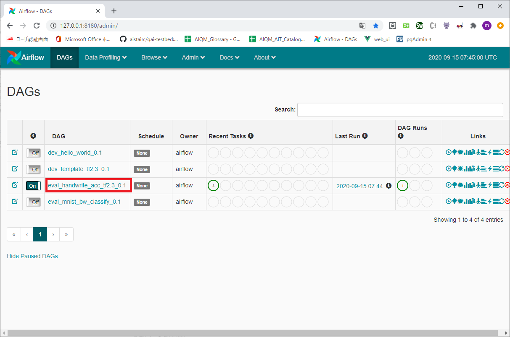
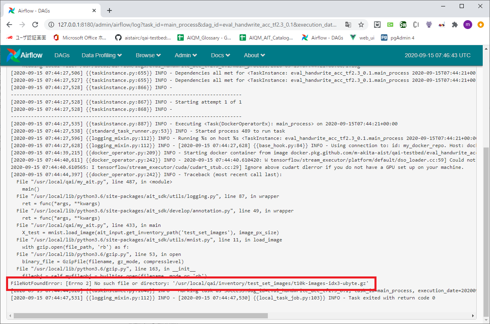

3.6. Test¶
3.6.1. prepare¶
launch testded
cd {testbed_root} docker-compose up -d
3.6.2. copy template test notebook¶
copy src
{testbed_root}\ait_repository\test\tests\dev_template_local_docker_0.1.ipynb
copy dst
{testbed_root}\ait_repository\test\tests\{Your AIT name}.ipynb
3.6.3. launch testing jupyter lab¶
execute
{testbed_root}\ait_repository\test\tools\launch_jupyter.bat
3.6.4. edit config.json¶
file path
{testbed_root}\ait_repository\test\tests\config.json
contents
{ "host_ait_root_dir" : "C:\\github\\qai-testbed\\ait_repository", "is_container": true }
host_ait_root_diris your checkout path.is_containeris testbed launch mode and alwaystrue.falseis used by testbed developer.
3.6.5. edit {Your AIT name}.ipynb in jupyter lab¶
3.6.5.1. [cell:1] pip install ait-sdk¶
if
ait_sdk-X.X.X-py3-none-any.whlis changed, update this.
3.6.5.2. [cell:3] setting¶
ait_nameandait_versionis change your’s.
3.6.5.3. [cell:9] post inventories¶
You need to make an API call to the inventory you have defined in ait.manifest.json.
3.6.5.4. [cell:10] get inventories¶
get inventories by name.
3.6.5.5. [cell:11] add test description¶
Add a TestDescription corresponding to the ait.manifest.json definition.
3.6.5.6. [cell:13] run test description¶
if
ResultisERRis wrong.
please check Airflow log.



3.6.5.7. [cell:15] output report¶
response
ReportUrluse report download.<Response [200]> {'OutParams': {'ReportUrl': 'http://127.0.0.1:8888/qai-testbed/api/0.0.1/download/20'}, 'Result': {'Code': 'D12000', 'Message': 'command invoke success.'}} <bound method Response.json of <Response [200]>>